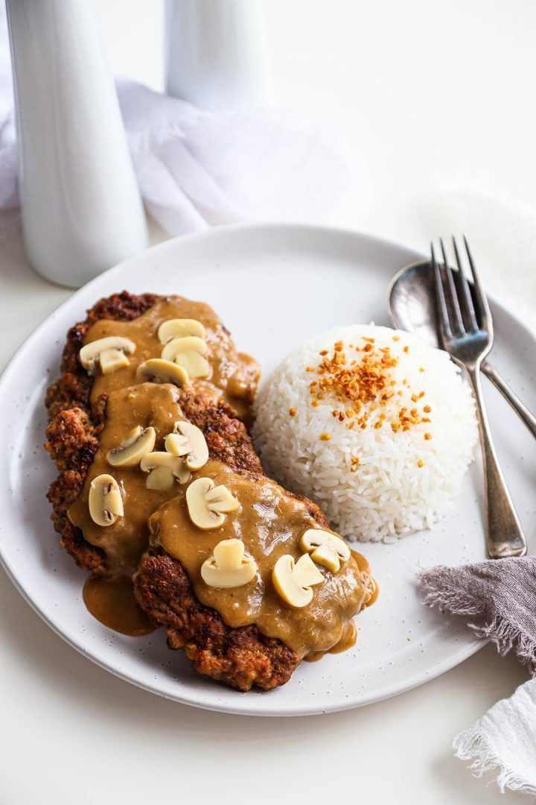

Burger Steak Recipe

Ingredients
- 500g ground beef
- 1 onion, finely chopped
- 1 egg
- 1/2 cup breadcrumbs
- Salt and pepper to taste
- 2 tbsp cooking oil
- 1 pack gravy mix or homemade gravy
Steps
- Mix all ingredients in a bowl.
- Shape into patties.
- Fry until golden brown.
- Prepare gravy and pour over patties.
- Serve hot with rice.